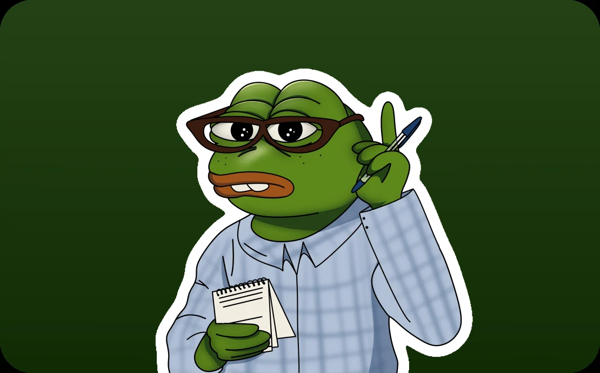
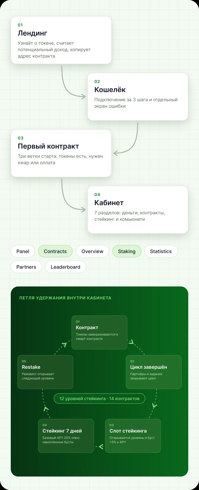
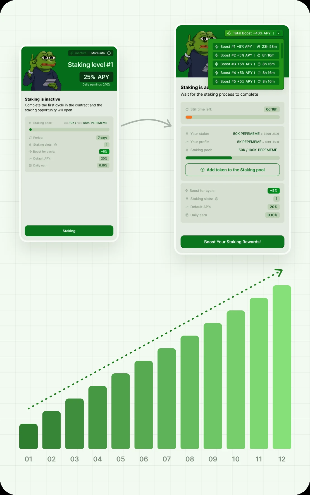
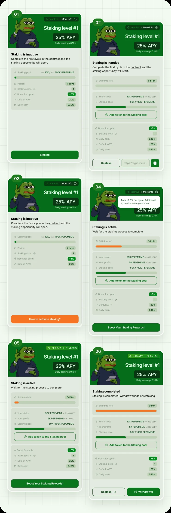
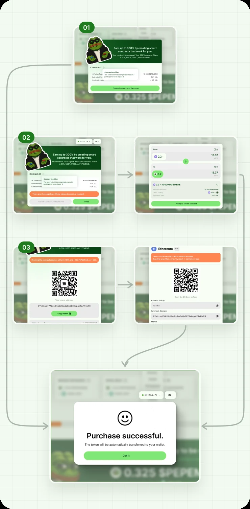
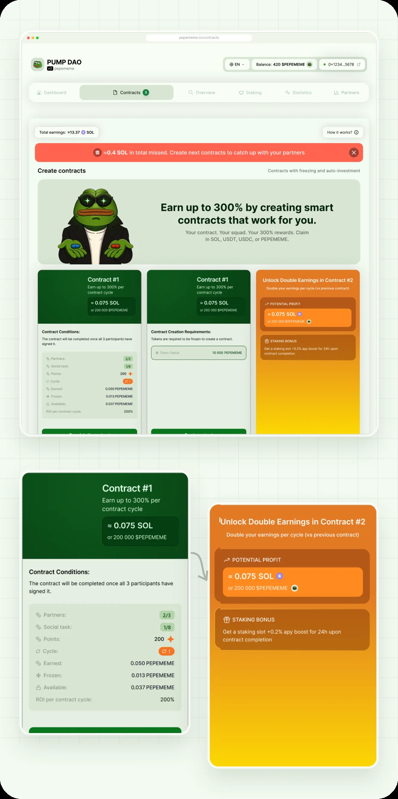
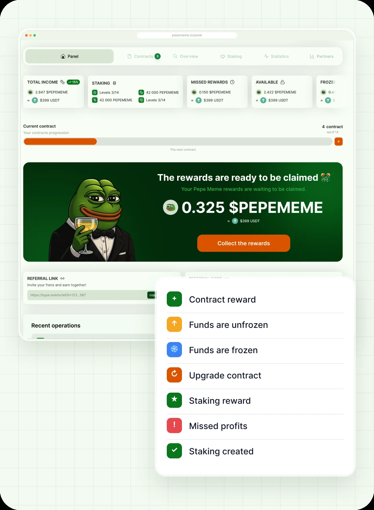
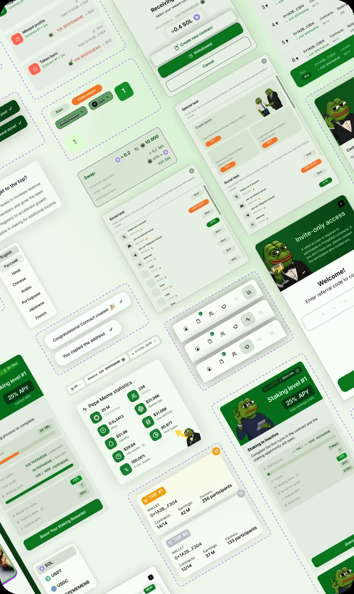
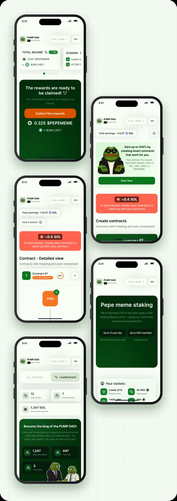

Механика удержания, которая сохранила ~$2 млн капитализации после пресейла

Суть проекта
Pump DAO это личный кабинет для держателей мем-токена $PEPEMEME на Solana. Держатель замораживает токены в контракте, проходит 12 уровней стейкинга и получает награды за то, что остаётся в проекте.
Я спроектировал продукт целиком за месяц: механику удержания, лендинг, кабинет, мобильную версию и все иллюстрации.
Контекст проекта
У $PEPEMEME уже было живое комьюнити и лендинг pepememe.io с таймерами и картой «To the moon». Не было продукта, где держатель мог бы что-то делать с токеном после покупки.
Как появилась задача
Команда готовила пресейл и боялась сценария, который случается с большинством мем-токенов:
- участники покупают дёшево на пресейле
- продают при первой возможности
- массовые продажи роняют курс
- комьюнити перестаёт верить проекту
Нужно было дать держателю причину не продавать. Жёсткая блокировка токенов не подходила: она отпугивает людей ещё до покупки.
Исследование
Аудит старого лендинга
Сайт хорошо передавал энергию бренда, но не отвечал на вопрос, что делать после покупки. Вся страница вела к кнопке Buy, а дальше ничего не было.
Кто пользуется продуктом
- Держатель. Купил на пресейле и решает, продать или остаться
- Новый участник. Пришёл по реферальной ссылке, у него может не быть ни токенов, ни денег на балансе
- Активный участник. Проходит уровни, выполняет задания и следит за лидербордом
У каждого из трёх свой стартовый баланс. Если сделать один общий вход, двое из трёх застрянут на первом шаге.
Рынок: что происходит после пресейла
Чтобы понять масштаб риска, я посмотрел, чем обычно заканчиваются пресейлы мем-токенов. Картина везде одна: участники покупают ради быстрой продажи, и токен теряет цену в первые дни.
Данные: BitMEX через ForkLog (июль 2025), ZachXBT через Cointelegraph (апрель 2024), Matrixport через Cointelegraph (март 2025), Chainalysis (январь 2025)
Продажа после пресейла это не поведение отдельных людей, а норма рынка. Значит, бороться нужно не с людьми, а с отсутствием причины остаться.
Гипотезы
Ключевая продуктовая гипотеза
Держатель не продаст, если каждый следующий шаг в продукте выгоднее, чем продажа прямо сейчас.
Отсюда два правила. Вывод доступен всегда, никого не блокируем. Но реинвест должен давать заметно больше, и это должно быть видно в цифрах прямо на карточке.
Основной сценарий
Путь держателя: лендинг, подключение кошелька, первый контракт и кабинет из 7 разделов. Внутри кабинета замкнута петля удержания:
- контракт замораживает токены
- завершённый цикл открывает слот стейкинга и буст
- стейкинг на 7 дней
- restake с бустом или вывод
- следующий уровень

Что вошло в продукт
Первая версия
- Лендинг с калькулятором дохода
- Вход через Phantom и инвайт-код
- Первый контракт с тремя ветками старта
- 14 контрактов цепочкой
- 12 уровней стейкинга
- Панель, статистика, партнёры и лидерборд
- Мобильная версия и 8 языков интерфейса
Ограничения
Месяц на весь продукт и фронтенд, который шёл сразу следом за дизайном. Каждый экран должен был уходить в вёрстку с первого раза.
Плюс Web3-специфика: вход через кошелёк, оплата в SOL, USDT, USDC или PEPEMEME и swap внутри продукта. И мем-стилистика, которую нужно было сохранить, не потеряв доверие к финансовому продукту.
Матрица удержания
Главное решение кейса. Каждый уровень стейкинга открывается только после завершённого цикла контракта. Чем дольше держатель в продукте, тем выше его доходность.
Бусты складываются, у каждого свой таймер на карточке. После завершения держатель выбирает: restake с бустом или вывод.

Одна карточка, шесть состояний
Первая активация, нужен контракт, как активировать, активен, активен с бустом, завершён. На любом этапе держатель видит, что происходит с уровнем и что сделать дальше.

Экономика матрицы
Чтобы реинвест был выгоднее вывода, разница должна быть видна в цифрах. Я посчитал, сколько держатель получает за один 7-дневный цикл на уровне с пулом 100 000 PEPEMEME, если каждый раз выбирает restake.
| Цикл | APY | Доход за 7 дней | К первому циклу |
|---|---|---|---|
| 1 | 20% | ≈ 384 | ×1,0 |
| 2 | 25% | ≈ 479 | ×1,25 |
| 3 | 30% | ≈ 575 | ×1,5 |
| 4 | 35% | ≈ 671 | ×1,75 |
Расчёт: пул × APY × 7 / 365. Буст +5% за каждый завершённый цикл
К четвёртому циклу доход за ту же неделю почти вдвое выше, чем на старте. Если держатель выводит, он теряет накопленный буст и начинает с 20% заново. Это и есть причина остаться, и она написана прямо на карточке уровня.
Первый контракт без тупиков
Новый участник приходит с разным балансом. Поэтому старт разделён на три ветки, и все они заканчиваются одним экраном успеха.
- Токенов хватает. Контракт создаётся в один клик, заморозка, комиссия и награда видны до подтверждения
- Токенов нет, но есть баланс. Swap прямо в модалке, без ухода в другой сервис
- Нет ни токенов, ни денег. Показываем точную сумму, адрес кошелька и выбор валюты оплаты

Деньги и контракты прозрачно
- 14 контрактов идут цепочкой. Закрытые карточки размыты, но показывают будущий доход
- В карточке все условия: партнёры 2/3, задания 1/8, очки, текущий цикл и ROI
- Панель раскладывает деньги на пять значений: общий доход, стейкинг, недополученные награды, доступно и заморожено. Каждое в токене и в USDT
- Лента из 7 типов операций читается по цвету и иконке, подписи можно не читать


Метрики продукта
Под каждую часть механики я заложил метрику, по которой видно, работает ли она. Главная метрика: какая доля предложения токена работает внутри продукта, а не лежит на бирже.
| Метрика | Что показывает |
|---|---|
| Доля токенов в стейкинге | Сколько предложения не давит на рынок |
| Restake после завершения | Как часто выбирают реинвест вместо вывода |
| Средний уровень держателя | Насколько глубоко проходят матрицу |
| Завершённые циклы контрактов | Сколько контрактов доходят до конца |
| Реферал → первый контракт | Сколько приглашённых доходят до старта |
| Время до первого контракта | Насколько быстро новичок проходит вход |
Иллюстрации и мемы
Все иллюстрации нарисовал я. Каждая отсылает к мему, который комьюнити узнаёт без объяснений. Поэтому механику не приходится расшифровывать: картинка уже говорит, что происходит.
Ещё 21 баннер ушёл в соцсети на запуск.


- #you choice. Выбор таблетки: restake или вывод
- #stonks. Рост дохода на следующем уровне
- #staking. Держатель прикидывает выгоду от стейкинга
- #congrats. Завершённый цикл контракта
Как ускорили передачу в разработку
Фронтенд шёл в нескольких днях за мной, поэтому файл собран под скорость передачи.
- Каждый модуль подписан статусом: готово к вёрстке или в работе
- Компоненты лежат рядом с экранами своего модуля
- Все состояния карточек разложены на канвасе с пояснениями
- Анимации открытия контракта разложены по шагам

Мобильная версия
56 мобильных экранов: лендинг, вход, контракты, стейкинг и все разделы кабинета. Карточки и лента работают так же, как на десктопе, а модалки превращаются в нижние листы.

Результаты после запуска
Через месяц после пресейла я сравнил поведение держателей с тем, что обычно происходит на рынке.
Пока рынок продаёт 50-90% токенов за первую неделю, у Pump DAO 65% предложения работало внутри продукта.
Итоги работы
Опыт
Этот проект научил меня начинать с бизнес-риска, а не с экранов. Удержание перестало быть блокировкой и стало причиной остаться, и это решение сделала механика в сочетании с мемным визуалом.
Результаты
- Продукт работает на pepememe.io
- После пресейла курс не обвалился, сохранено около $2 млн капитализации
- 116 экранов, 43 флоу и 163 состояния переданы в разработку за месяц
Когда каждый следующий шаг выгоднее предыдущего, держателю незачем продавать.